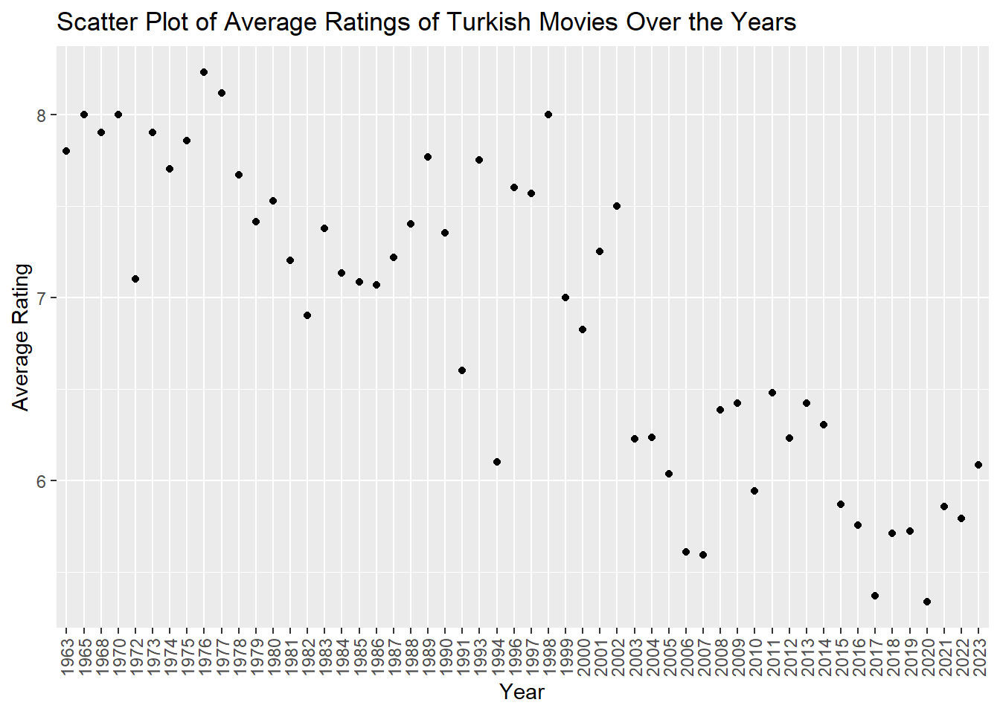
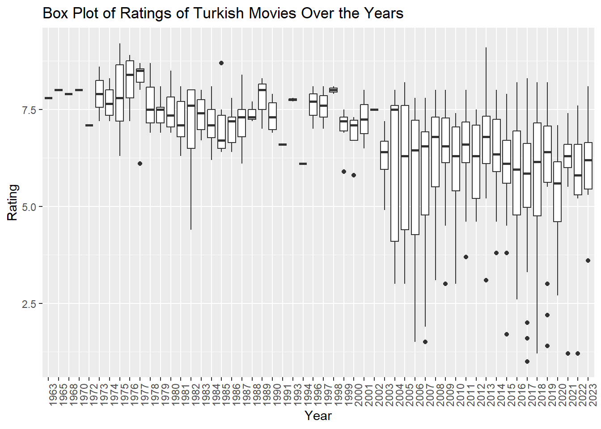
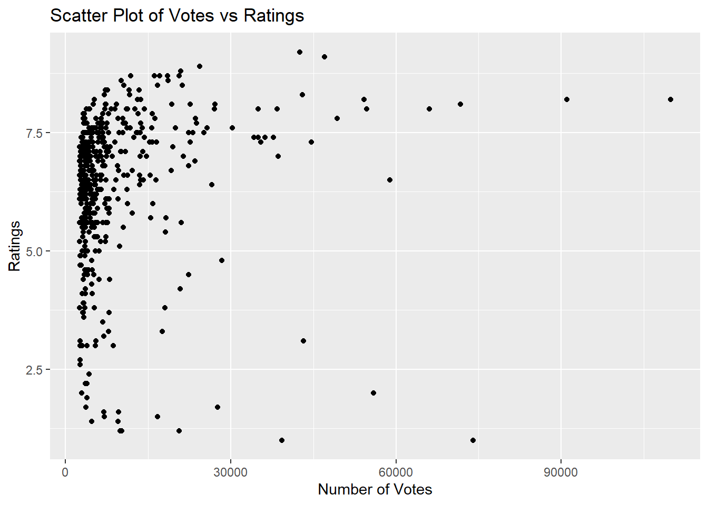
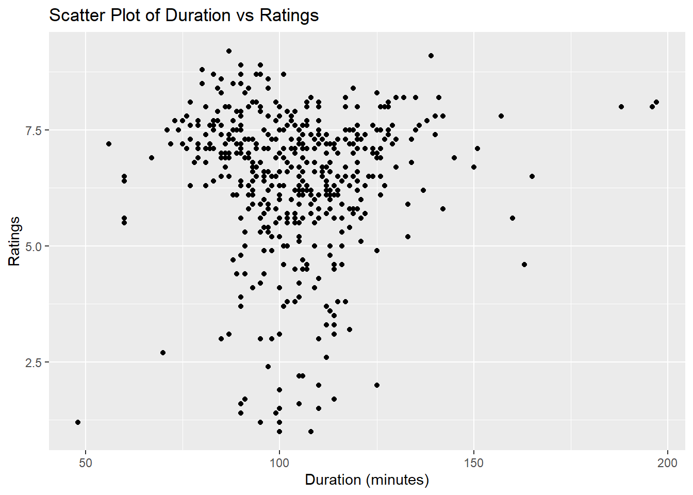

To begin with, I saw every one of them except the “Süt Kardeşler”, and I think the ratings of Hababam Class film series and “Tosun Paşa” are very accurate. “Hababam Class” was a heartfelt and genuine film series, particularly in the way it represented the cultural norms of the time and its lovable character. Regarding “Fundamentals” I think it was among Cem Yılmaz’s greatest pieces, but after seeing some of his more recent works, I don’t feel a strong connection to the earlier ones. I disagree that it should be in second place because of this.
In fact, I haven’t watched any of them, and some of them I’ve never even heard of. However, even if I have to push myself, I’m considering seeing “Cumali Ceber: May God Take You” after this assignment is done :))
This table leads me to believe that I don’t watch movies with ratings higher than eight. :)
Plots
Scatter Plot of Average Ratings of Movies Over the Years
Code
movies_df$movie_years <-as.factor(movies_df$movie_years)# Calculate yearly rating averagesrating_avg_by_year <- movies_df %>%group_by(movie_years) %>%summarise(avg_rating =mean(movie_ratings),num_movies =n())# Scatter plot of yearly rating averages with rotated year labelsggplot(rating_avg_by_year, aes(x = movie_years, y = avg_rating)) +geom_point() +labs(title ="Scatter Plot of Average Ratings of Turkish Movies Over the Years",x ="Year",y ="Average Rating") +theme(axis.text.x =element_text(angle =90, vjust =0.5, hjust =1))

Box Plot of Ratings of Movies Over the Years
Code
ggplot(movies_df, aes(x = movie_years, y = movie_ratings)) +geom_boxplot() +theme(axis.text.x =element_text(angle =90, hjust=1)) +labs(title ="Box Plot of Ratings of Turkish Movies Over the Years",x ="Year",y ="Rating")

Correlation between Votes and Ratings
Code
ggplot(movies_df, aes(x = movie_votes, y = movie_ratings)) +geom_point() +labs(title ="Scatter Plot of Votes vs Ratings",x ="Number of Votes",y ="Ratings")

Numerical Representation of the Above Graph (Correlation)
Code
correlation <-cor(movies_df$movie_votes, movies_df$movie_ratings, use ="complete.obs")cat("Correlation between Votes and Ratings:", correlation, "\n")
Correlation between Votes and Ratings: 0.1307806
Correlation between Duration and Ratings
Code
correlation_duration_rating <-cor(movies_df$movie_durations, movies_df$movie_ratings, use ="complete.obs")cat("Correlation between Duration and Ratings:", correlation_duration_rating, "\n")
Correlation between Duration and Ratings: 0.03343216
Code
ggplot(movies_df, aes(x = movie_durations, y = movie_ratings)) +geom_point() +labs(title ="Scatter Plot of Duration vs Ratings",x ="Duration (minutes)",y ="Ratings")

Numerical Representation of the Above Graph (Correlation)
Code
correlation_2 <-cor(movies_df$movie_durations, movies_df$movie_ratings, use ="complete.obs")cat("Correlation between Duration and Ratings:", correlation_2, "\n")
Correlation between Duration and Ratings: 0.03343216
movies_df %>%arrange(desc(movie_ratings)) %>%head(11) %>%kable(caption ="First 11 Movies Sorted by Rating") %>%kable_styling(full_width =FALSE)
First 11 Movies Sorted by Rating
movie_titles
movie_years
movie_durations
movie_ratings
movie_votes
Hababam Sinifi
1975
87
9.2
42513
CM101MMXI Fundamentals
2013
139
9.1
46996
Tosun Pasa
1976
90
8.9
24329
Hababam Sinifi Sinifta Kaldi
1975
95
8.9
24370
Süt Kardesler
1976
80
8.8
20888
Saban Oglu Saban
1977
90
8.7
18535
Zügürt Aga
1985
101
8.7
16135
Neseli Günler
1978
95
8.7
11807
Kibar Feyzo
1978
83
8.7
17128
Hababam Sinifi Uyaniyor
1976
94
8.7
20640
Canim Kardesim
1973
85
8.6
10097
It is obvious from the fact that no movie appears again in the two dataframes that IMDb considers other factors in addition to ratings when identifying the top 1000 films.
It’s also unexpected that the oldest film in the top 1000 was released in 1996 while the best movie_df movies are generally from the 80s.